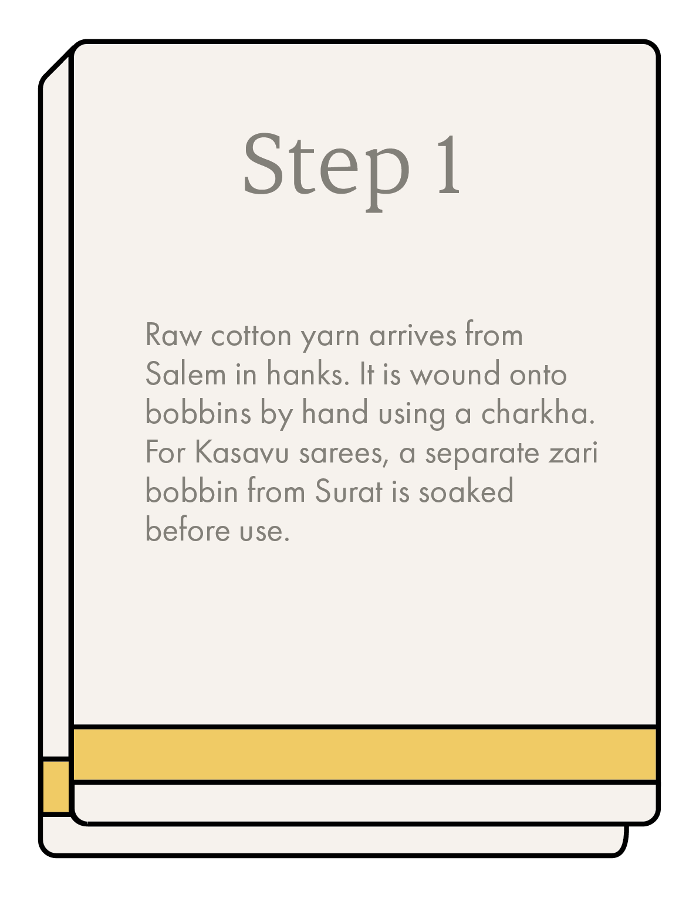
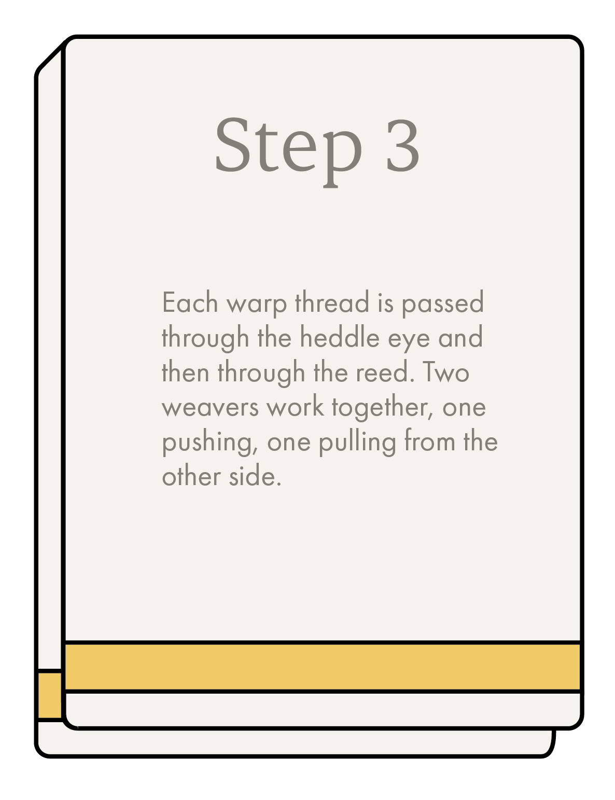
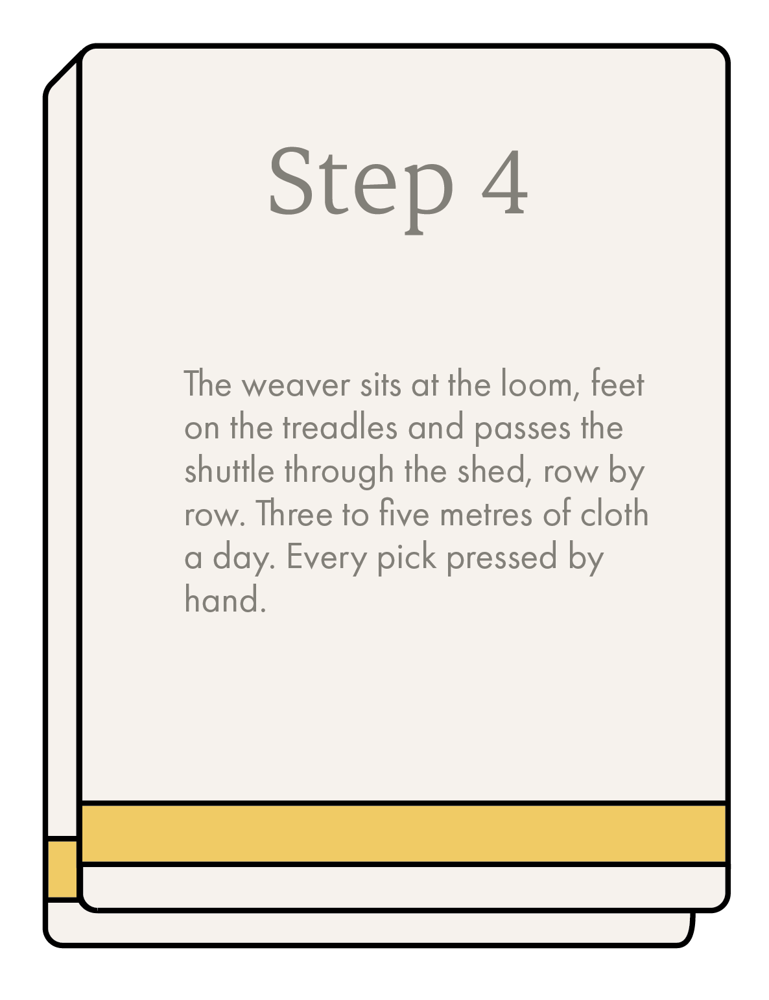
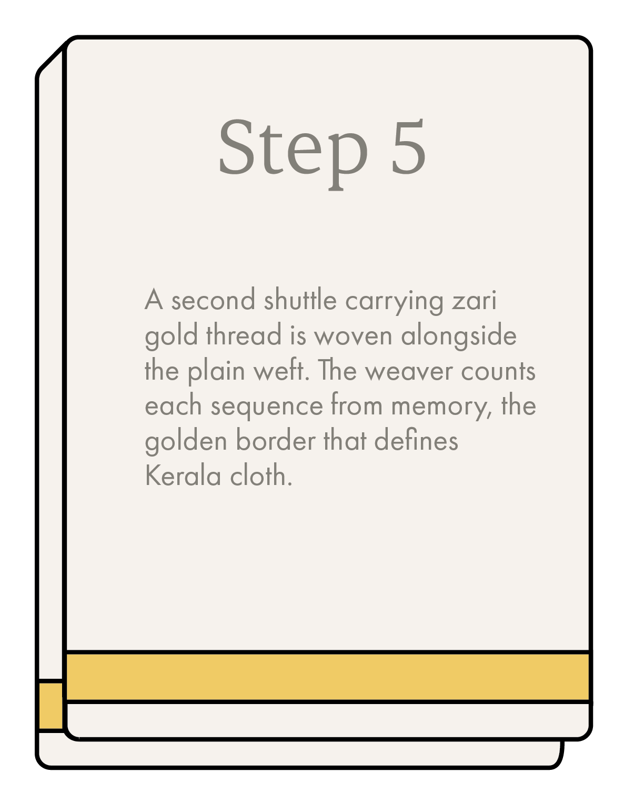
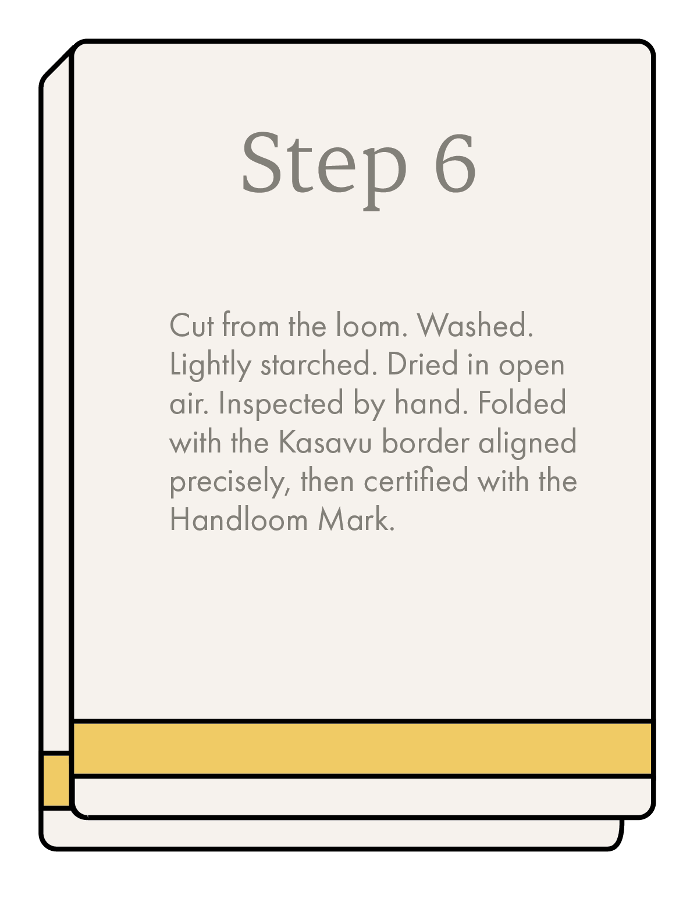

Six Steps, One Saree
Each cloth that leaves Eravathody has passed through every one of these stages: by hand, every time.







Here's what happens between the raw hank and the Handloom Mark.
Each cloth that leaves Eravathody has passed through every one of these stages: by hand, every time.





No machines. No shortcuts. The Handloom Mark on every cloth from Eravathody is a guarantee that these six steps happened exactly as described, by hand, by the people you can meet here.